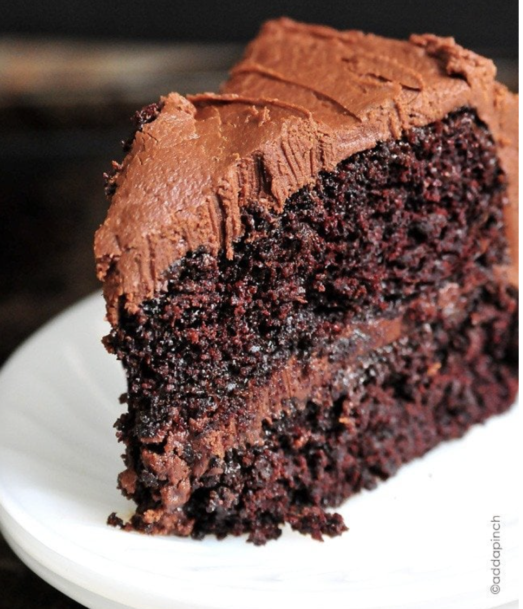

Chocolate Cake

Description
The best chocolate cake recipe. Ever? There are plenty of claims for the best chocolate cake recipe. I get that.
But with one bite of this decadent, moist chocolate cake with chocolate frosting, every single person around the table commented that this was the best chocolate cake they ever tasted./p>
Ingredients
- 2 cups (240 g) all-purpose flour
- 2 cups (396 g) sugar
- 3/4 cup (63 g) unsweetened cocoa powder
- 2 teaspoons (8 g) baking powder
- 1 1/2 teaspoons (9 g) baking soda
- 1 teaspoon (2.8 g) kosher salt
- 1 teaspoon (2.3 g) espresso powder, homemade or store-bought
- 1 cup (227 g) milk, or buttermilk, almond, or coconut milk
- 1/2 cup (99 g) vegetable oil, or canola oil, or melted coconut oil
- 2 large (100 g) eggs
- 2 teaspoons (9.4 g) vanilla extract
- 1 teaspoon salt, more to taste
- 1 cup (227. g) boiling water
- Chocolate Buttercream Frosting Recipe
Steps
- Preheat oven to 350º F. Prepare two 9-inch cake pans by spraying with baking spray, buttering and lightly flouring, or brushing them with homemade chocolate pan release.
- Add flour, sugar, cocoa, baking powder, baking soda, salt and espresso powder to a large bowl or the bowl of a stand mixer. Whisk through to combine or, using your paddle attachment, stir through flour mixture until combined well.
- Add milk, vegetable oil, eggs, and vanilla to flour mixture and mix together on medium speed until well combined. Reduce speed and carefully add boiling water to the cake batter until well combined.
- Distribute cake batter evenly between the two prepared cake pans. Bake for 30-35 minutes, until a toothpick or cake tester inserted in the center of the chocolate cake comes out clean.
- Remove from the oven and allow to cool for about 10 minutes, remove from the pan and cool completely.
- Frost the cake with Chocolate Buttercream Frosting.
Home